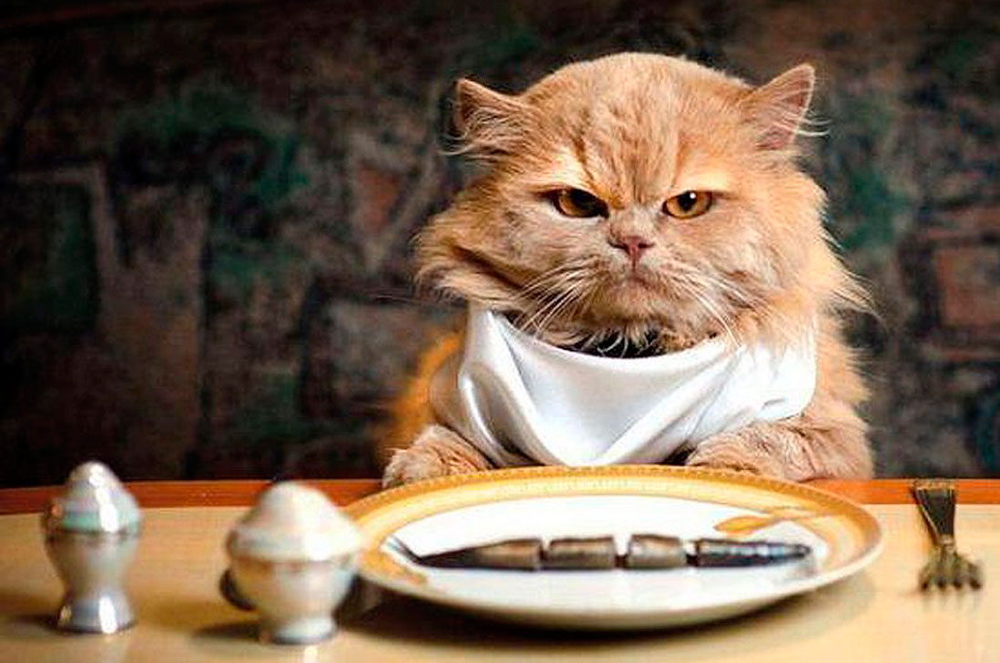
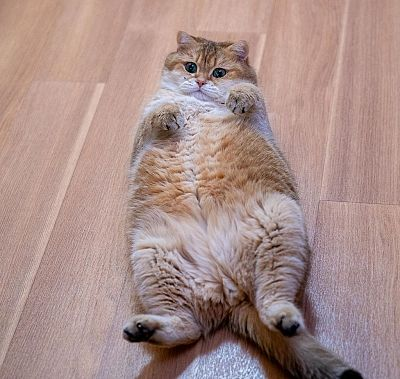

{kind=link}
-
Con fama de independientes y poco apegados a sus cuidadores, lo cierto es que los gatos son unos excelentes compañeros para cualquier hogar. Pueden ser tan cariñosos como los perros, pero van a presentar considerables diferencias, no solo físicas. Es básico que conozcamos el carácter, el comportamiento y las necesidades, es decir, todas las características del gato, antes de adoptar uno.
Para garantizarnos una convivencia feliz, en este artículo de ExpertoAnimal repasamos todos los detalles y te explicaremos cómo son los gatos.
Características de los gatos
16 de Diciembre del 2021

En cuanto a las características físicas del gato, estamos ante un mamífero cuadrúpedo, con cola, aunque el gato de Manx carece de ella, garras retráctiles y pelo que recubre todo su cuerpo. Posee unos 230 huesos que le permiten una gran flexibilidad y elasticidad. Destacan sus bigotes, que son pelos modificados con función sensitiva. Su coloración es muy variable y puede ser monocolor, bicolor o tricolor y presentar diferentes patrones atigrados y longitudes. Aunque hay variaciones entre ejemplares y razas más grandes o más pequeñas, podemos establecer un peso medio de entre 3 y 5 kg. Además, los gatos son animales vivíparos, lo que quiere decir que paren a sus crías vivas en camadas de unos 4-5 gatitos que serán alimentados con la leche de su madre durante sus primeras semanas de vida. Destaca también su sentido de la vista, del oído y del olfato, lo que facilita su vida como animal depredador. Su temperatura corporal se encuentra entre 38-39 ºC
Alimentacion de los gatos
16 de diciembre del 2021
Los gatos son animales carnívoros estrictos. Su alimentación en el medio natural se basaba en la caza de roedores, aves y lagartos y no es raro que ocasionalmente ingieran plantas, supuestamente para complementar su dieta. En la actualidad, podemos escoger entre varias opciones, como son la comida casera, el pienso, el alimento húmedo o el deshidratado, pero siempre de acuerdo con la etapa vital en la que se encuentre el gato para no caer en deficiencias nutricionales. Al contrario de lo que se cree a nivel popular, donde la imagen del gato va unida a un plato de leche, los gatos adultos no necesitan consumir este alimento. De hecho, con la edad pierden la enzima imprescindible para digerir el lácteo, lo que hace que la leche pueda resultar indigesta para ellos. Descubre toda la verdad acerca de este mito en este artículo: "¿Los gatos pueden beber leche?".
Comportamiento y personalidad de los gatos
25 de julio del 2017
De entre las características del gato destaca su carácter, aunque encontraremos tremendas variaciones en función del ejemplar y de las experiencias que haya vivido a lo largo de su vida. Podemos destacar su rica comunicación, en la que se incluye el lenguaje corporal y sonidos como los maullidos, los bufidos y los ronroneos. Las feromonas que emite y detecta son otra forma muy importante de comunicación. Los gatos destacan por su limpieza y, salvo enfermedad, van a dedicar horas al autoacicalamiento. Buena parte del tiempo restante lo pasan durmiendo. Además de limpiarse, para ellos es una necesidad afilarse las uñas. Si no les proporcionamos lugares adecuados, como un rascador, es probable que nuestros muebles o cortinas acaben rasgados. Siguiendo con la higiene, evacuarán en el arenero desde pequeños. Los gatos, excepto la gata y sus camadas, son de hábitos solitarios. Aunque pueden vivir en colonias o colectividades, también es cierto que es una situación que les puede resultar estresante, lo que manifestarán con eliminación inadecuada, peleas, disminución del apetito, etc. Son amantes de las rutinas, por lo que, cualquier cambio debe realizarse tras un período de adaptación. Al contrario que los perros, no requieren el aprendizaje de órdenes básicas, aunque sí conviene establecer unas normas de convivencia y dedicarles tiempo de juego y atenciones.
Reproducción de los gatos
16 de Diciembre del 2021

¿Cómo se reproducen los gatos? Los gatos machos puede reproducirse siempre que detecten la cercanía de una gata en celo. Ellas son poliéstricas estacionales, lo que quiere decir que, durante los meses de mayor incidencia de luz solar, van a experimentar continuos celos. Esto hace que una de las características de los gatos sea su capacidad para engendrar incluso tres camadas al año. La gestación dura unas nueve semanas. Tras el nacimiento, los gatitos deben pasar, como mínimo, ocho semanas con su madre y hermanos. Los gatos alcanzan la madurez sexual pronto, aproximadamente a los 6-8 meses. Se recomienda la esterilización temprana de machos y de hembras como parte de una tenencia responsable para evitar problemas de convivencia, de salud y la reproducción descontrolada.